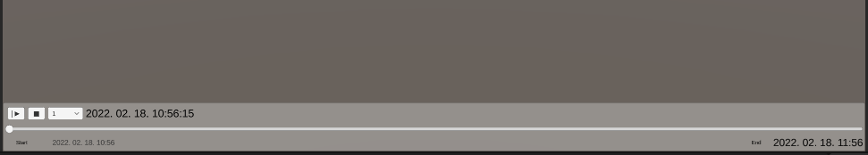

Timeline 
Timeline implementation inside Unity. This package uses EventBus to invoke events whenever the timeline moves, with this you can modify the state of your objects based on time.
Installation
Use OpenUPM to install the package.
openupm add com.autsoft.unitysupplements.timeline
Getting started
Adding timeline
After adding the package you can add a timeline to your scene with the context menu like any other component.

Sample

On the BasicTimelinePlayer prefab provided by the package you can
- Start/Pause
- Stop (reset)
- Change speed of playback
- Scrub
The two events used by the basic implementation is CurrentTimeChanged and TimeRangeChanged. The first one notifies of the whenever the slider on the timeline moves. The second one is for when the start or end date changes.
You can subscribe to these events at other parts of you application, for example in the sample scene we write the current time to a UI text element like so:
public class TimeReactor : MonoBehaviour
{
[Inject] private readonly IEventBus _eventBus = default!;
[SerializeField] private TMP_Text _text = default!;
private void Start()
{
this.CheckSerializedField(_text, nameof(_text));
_eventBus.Subscribe<CurrentTimeChanged>(OnTimeChanged);
}
private void OnDestroy() => _eventBus.UnSubscribe<CurrentTimeChanged>(OnTimeChanged);
private void OnTimeChanged(CurrentTimeChanged message) => _text.text = message.CurrentTime.ToString(CultureInfo.InvariantCulture);
}